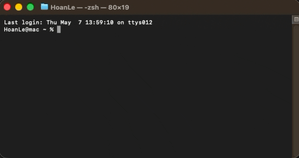

Installation
Installation¶
Wählen Sie die Desktop-App (empfohlen — keine Python-Installation oder Code-Einrichtung erforderlich) oder die Installation als Python-Paket (pip).
Alle Installationsprogramme werden auf der offiziellen Seite GitHub Releases veröffentlicht. Ihre Einstellungen, Fit-Modelle und Vorlagen werden getrennt vom Anwendungsordner gespeichert, sodass bei einer Aktualisierung all Ihre Arbeiten erhalten bleiben.
1. SPECTROview installieren¶
Wählen Sie unten Ihre gewünschte Installationsmethode oder Ihr Betriebssystem:
Wenn Sie bereits Python verwenden (Python ≥ 3.12), installieren Sie SPECTROview direkt über PyPI:
Starten Sie SPECTROview über Ihr Terminal oder die Anaconda Prompt:

Installation von SPECTROview über pip.
Weitere Python-Befehle (Upgrade, spezifische Version, Entwicklungsversion)
- Mehrere Python-Versionen installiert? Verwenden Sie
pip3 install spectroviewoderpython -m pip install spectroview. - Auf die neueste Version aktualisieren:
pip install --upgrade spectroview - Eine bestimmte Version installieren:
pip install spectroview==26.46.1 - Den neuesten Entwicklungsstand von GitHub installieren:
pip install git+https://github.com/CEA-MetroCarac/SPECTROview.git - Installierte Version prüfen:
pip show spectroview - Optionales Sprachdiktat (nur Python):
pip install SpeechRecognition pyaudio
Öffnen Sie GitHub Releases, klappen Sie bei der neuesten Version Assets auf und wählen Sie einen der beiden Windows-Downloads:
Option A — Standard-Installer (...Windows_x64_Setup.exe) (Empfohlen)
- Doppelklicken Sie auf die heruntergeladene
.exe-Datei, um die Installation zu starten (kein Administratorpasswort erforderlich). - Öffnen Sie SPECTROview über das Startmenü oder die Verknüpfung auf dem Desktop.
- Zukünftige Updates können direkt in der App mit einem Klick automatisch installiert werden (Aktualisieren und neu starten (Update and Restart)).
Option B — Portable Version (...Windows_x64_Portable.zip) (Ohne Installation)
- Klicken Sie mit der rechten Maustaste auf die
.zip-Datei, wählen Sie Alle extrahieren... und entpacken Sie das Archiv in einen beliebigen Ordner (auch auf einen USB-Stick oder in einen persönlichen Ordner). - Öffnen Sie den entpackten Ordner und doppelklicken Sie auf
SPECTROview.exe.
Öffnen Sie GitHub Releases, klappen Sie bei der neuesten Version Assets auf und laden Sie die Datei ...macOS_arm64.dmg herunter (Macs mit Apple Silicon — M1 oder neuer).
Nur Apple Silicon
Vorgefertigte .dmg-Installationspakete für macOS unterstützen nur Macs mit Apple Silicon (M1, M2, M3, M4 oder neuer; prüfen Sie dies unter Apple-Menü () → Über diesen Mac → Chip: Apple ...). Ältere Intel-Macs werden vom Desktop-Installer nicht unterstützt.
Installationsschritte:
- Doppelklicken Sie auf die heruntergeladene
.dmg-Datei. - Ziehen Sie
SPECTROviewauf das OrdnersymbolApplications(Programme). - Nur beim ersten Öffnen: Klicken Sie mit der rechten Maustaste (oder per Control-Klick) auf SPECTROview im Ordner Programme → klicken Sie auf Öffnen (Open) → klicken Sie im Bestätigungsdialog erneut auf Öffnen.
Warum zeigt macOS beim ersten Start eine Warnung an?
SPECTROview ist eine kostenlose Open-Source-App und verwendet derzeit keine kostenpflichtige Apple-Developer-Signatur. Falls macOS meldet, dass der Entwickler nicht verifiziert werden kann, öffnen Sie Systemeinstellungen → Datenschutz & Sicherheit und klicken Sie auf Dennoch öffnen. Dieser Schritt ist nur einmal pro Version nötig.
Öffnen Sie GitHub Releases, klappen Sie bei der neuesten Version Assets auf und wählen Sie Ihr bevorzugtes Format:
Option A — Ubuntu-/Debian-Installer (...Linux_amd64.deb) (Empfohlen)
Doppelklicken Sie auf die heruntergeladene .deb-Datei, um sie über das Software-Center zu installieren, oder installieren Sie sie über ein Terminal:
Starten Sie SPECTROview anschließend über das Anwendungsmenü oder durch Eingabe von spectroview. Ihre Einstellungen bleiben in Ihrem Home-Ordner sicher erhalten, falls Sie später ein Upgrade durchführen oder die Anwendung deinstallieren.
Option B — Portables AppImage (...Linux_x86_64.AppImage) (Ohne Installation)
- Klicken Sie mit der rechten Maustaste auf die Datei → Eigenschaften → Zugriffsrechte → aktivieren Sie Datei als Programm ausführen (oder führen Sie
chmod +x SPECTROview_*.AppImageaus). - Doppelklicken Sie auf die Datei, um SPECTROview zu starten.
Unter Ubuntu 24.04 oder neuer
Falls ein Doppelklick auf das AppImage keine Wirkung zeigt, installieren Sie einmalig FUSE (sudo apt install libfuse2t64) oder starten Sie es mit ./SPECTROview_*.AppImage --appimage-extract-and-run.
2. Den integrierten KI-Chat-Agenten verwenden¶
Der KI-Chat-Agent ist bereits enthalten — innerhalb von SPECTROview ist keine zusätzliche Installation erforderlich:
- Cloud-KI (OpenAI, Gemini, DeepSeek, Anthropic usw.): Geben Sie Ihren API-Schlüssel unter Einstellungen (Settings) → KI-Einstellungen (AI Settings) ein.
- Private lokale KI (läuft offline auf Ihrem eigenen Computer): Installieren Sie Ollama und starten Sie den Dienst, bevor Sie SPECTROview öffnen.
3. Automatische Updates¶
SPECTROview prüft kurz nach dem Start automatisch im Hintergrund auf neue Versionen (oder jederzeit, wenn Sie in der oberen Symbolleiste auf Nach Updates suchen (Check for updates) klicken). Sobald ein Update verfügbar ist, erscheint oben im Fenster eine Leiste:
Update-Banner, das angezeigt wird, sobald eine neuere Version verfügbar ist.
- Klicken Sie auf Aktualisieren und neu starten / Update herunterladen (Download Update), um die neueste Version zu installieren oder herunterzuladen.
- Klicken Sie auf Versionshinweise anzeigen (Show changelog), um die Änderungen nachzulesen, auf Später (Update later), um den Hinweis für heute auszublenden, oder auf Version überspringen (Skip this version), um bis zu einer künftigen Veröffentlichung bei Ihrer aktuellen Version zu bleiben.
| Ihre Version | Ablauf beim Aktualisieren |
|---|---|
Windows-Installer & Python (pip) |
Lädt die Datei herunter, prüft sie automatisch, aktualisiert SPECTROview und startet die Anwendung anschließend neu. |
| Linux-AppImage (in einem beschreibbaren Ordner) | Ersetzt sich sicher selbst und startet SPECTROview neu. |
Windows Portable & macOS (.dmg) |
Lädt die neue, verifizierte Datei herunter und öffnet einen einfachen Hinweisdialog, sodass Sie das Archiv entpacken oder die App in Programme ziehen können. |
Ubuntu / Debian (.deb) |
Lädt die verifizierte .deb-Datei herunter und ermöglicht das Kopieren des Installationsbefehls mit einem Klick. |
Offline-freundlich & datenschutzkonform
Es werden niemals Nutzungsdaten oder persönliche Dateien hochgeladen. Wenn Ihr Computer offline ist, bleibt die Update-Prüfung beim Start still im Hintergrund, sodass SPECTROview normal startet.
Details zu Sicherheit & Unternehmensnetzwerken (für IT-Teams)
- Dateiintegrität: Jedes heruntergeladene Installationsprogramm oder Paket wird vor der Ausführung gegen die offizielle Prüfsumme in
SHA256SUMS.txtverifiziert. - Vertrauenswürdige HTTPS-Verbindungen (
GHSA-6q48-6c7w-9gw2): Netzwerkverbindungen verwenden vorrangig den nativen Zertifikatsspeicher Ihres Betriebssystems (inklusive Unterstützung für institutionelle/unternehmensinterne CAs sowie benutzerdefinierteSSL_CERT_FILE- /REQUESTS_CA_BUNDLE-Variablen) und setzen ein gepatchtescertifi-Bundle (>= 2026.10.23) voraus, wobei kompromittierte eMudhra-/emSign-Stammzertifikate zurückgewiesen werden. - Vorabversionen testen: Optionale Benachrichtigungen über Release-Candidates lassen sich unter Einstellungen → Allgemein (General) → Anwendungs-Updates (Application Updates) ein- und ausschalten.
4. Häufige Fragen & Fehlerbehebung¶
macOS meldet, dass „SPECTROview“ nicht geöffnet werden kann (Entwickler kann nicht verifiziert werden)
- Öffnen Sie Ihren Ordner Programme im Finder.
- Klicken Sie mit gedrückter Control-Taste (oder per Rechtsklick) auf
SPECTROviewund wählen Sie Öffnen. - Klicken Sie im eingeblendeten Dialogfeld erneut auf Öffnen.
(Alternativ: Öffnen Sie Systemeinstellungen → Datenschutz & Sicherheit, scrollen Sie nach unten und klicken Sie auf Dennoch öffnen.)
Windows: Sollte ich Setup.exe oder Portable.zip herunterladen?
Wählen Sie Setup.exe, wenn Sie Verknüpfungen im Startmenü und automatische Ein-Klick-Updates möchten. Wählen Sie Portable.zip, wenn Sie auf eine Installation verzichten möchten (oder das Programm von einem USB-Laufwerk starten wollen) — achten Sie darauf, das Archiv vor dem Doppelklick auf SPECTROview.exe über Alle extrahieren... zu entpacken.
Das AppImage öffnet sich unter Ubuntu / Debian nicht
Minimalen Ubuntu-Installationen fehlen mitunter FUSE 2 oder Qt-X11-Bibliotheken. Führen Sie diese Befehle einmalig im Terminal aus:
Alternativ starten Sie das AppImage ohne FUSE: ./SPECTROview_*.AppImage --appimage-extract-and-run.
Leeres Fenster oder Grafikabsturz beim Start
Versuchen Sie, SPECTROview mit aktiviertem Software-Grafik-Rendering zu starten:
- Windows (PowerShell):
$env:QT_QUICK_BACKEND="software"; spectroview - macOS / Linux:
export QT_QUICK_BACKEND=software; spectroview
Python-Fehler (pip: command not found, Berechtigungsfehler oder spectroview: command not found)
- Falls
pipnicht erkannt wird, führen Siepython -m pip install spectroview(oderpython3 -m pip install spectroview) aus. - Falls
spectroviewnach der Installation nicht erkannt wird, starten Sie das Programm mitpython -m spectroview.main. - Vermeiden Sie Systemberechtigungsfehler, indem Sie zuerst eine virtuelle Umgebung erstellen: